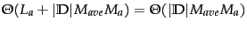
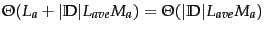
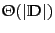
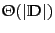
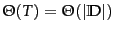
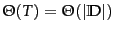

| kNN with preprocessing of training set | |
| training |
|
| testing |  |
| kNN without preprocessing of training set | |
| training | |
| testing |  |
Table 14.3 gives the time complexity of kNN. kNN has properties that are quite different from most other classification algorithms. Training a kNN classifier simply consists of determining  and preprocessing documents. In fact, if we preselect a value for
and preprocessing documents. In fact, if we preselect a value for  and do not preprocess, then kNN requires no training at all. In practice, we have to perform preprocessing steps like tokenization. It makes more sense to preprocess training documents once as part of the training phase rather than repeatedly every time we classify a new test document.
and do not preprocess, then kNN requires no training at all. In practice, we have to perform preprocessing steps like tokenization. It makes more sense to preprocess training documents once as part of the training phase rather than repeatedly every time we classify a new test document.
Test time is
 for kNN. It is linear in the size of the training set as we need to compute the distance of each training document from the test document. Test time is independent of the number of classes . kNN therefore has a potential advantage for problems with large .
for kNN. It is linear in the size of the training set as we need to compute the distance of each training document from the test document. Test time is independent of the number of classes . kNN therefore has a potential advantage for problems with large .
In kNN classification, we do not perform any estimation of parameters as we do in Rocchio classification (centroids) or in Naive Bayes (priors and conditional probabilities). kNN simply memorizes all examples in the training set and then compares the test document to them. For this reason, kNN is also called memory-based learning or instance-based learning . It is usually desirable to have as much training data as possible in machine learning. But in kNN large training sets come with a severe efficiency penalty in classification.
Can kNN testing be made more efficient than
 or, ignoring the length of documents, more efficient than
? There are fast kNN algorithms for small dimensionality
or, ignoring the length of documents, more efficient than
? There are fast kNN algorithms for small dimensionality  (Exercise 14.8 ). There are also approximations for large
(Exercise 14.8 ). There are also approximations for large  that give error bounds for specific efficiency gains (see Section 14.7 ). These approximations have not been extensively tested for text classification applications, so it is not clear whether they can achieve much better efficiency than
without a significant loss of accuracy.
that give error bounds for specific efficiency gains (see Section 14.7 ). These approximations have not been extensively tested for text classification applications, so it is not clear whether they can achieve much better efficiency than
without a significant loss of accuracy.
The reader may have noticed the similarity between the problem of finding nearest neighbors of a test document and ad hoc retrieval, where we search for the documents with the highest similarity to the query (Section 6.3.2 , page 6.3.2 ). In fact, the two problems are both  nearest neighbor problems and only differ in the relative density of (the vector of) the test document in kNN (10s or 100s of non-zero entries) versus the sparseness of (the vector of) the query in ad hoc retrieval (usually fewer than 10 non-zero entries). We introduced the inverted index for efficient ad hoc retrieval in Section 1.1 (page 1.1 ). Is the inverted index also the solution for efficient kNN?
nearest neighbor problems and only differ in the relative density of (the vector of) the test document in kNN (10s or 100s of non-zero entries) versus the sparseness of (the vector of) the query in ad hoc retrieval (usually fewer than 10 non-zero entries). We introduced the inverted index for efficient ad hoc retrieval in Section 1.1 (page 1.1 ). Is the inverted index also the solution for efficient kNN?
An inverted index restricts a search to those documents that have at least one term in common with the query. Thus in the context of kNN, the inverted index will be efficient if the test document has no term overlap with a large number of training documents. Whether this is the case depends on the classification problem. If documents are long and no stop list is used, then less time will be saved. But with short documents and a large stop list, an inverted index may well cut the average test time by a factor of 10 or more.
The search time in an inverted index is a function of the length of the postings lists of the terms in the query. Postings lists grow sublinearly with the length of the collection since the vocabulary increases according to Heaps' law - if the probability of occurrence of some terms increases, then the probability of occurrence of others must decrease. However, most new terms are infrequent. We therefore take the complexity of inverted index search to be  (as discussed in Section 2.4.2 , page 2.4.2 ) and, assuming average document length does not change over time,
.
(as discussed in Section 2.4.2 , page 2.4.2 ) and, assuming average document length does not change over time,
.
As we will see in the next chapter, kNN's effectiveness is close to that of the most accurate learning methods in text classification (Table 15.2 , page 15.2 ). A measure of the quality of a learning method is its Bayes error rate , the average error rate of classifiers learned by it for a particular problem. kNN is not optimal for problems with a non-zero Bayes error rate - that is, for problems where even the best possible classifier has a non-zero classification error. The error of 1NN is asymptotically (as the training set increases) bounded by twice the Bayes error rate. That is, if the optimal classifier has an error rate of  , then 1NN has an asymptotic error rate of less than
, then 1NN has an asymptotic error rate of less than  . This is due to the effect of noise - we already saw one example of noise in the form of noisy features in Section 13.5 (page 13.5 ), but noise can also take other forms as we will discuss in the next section. Noise affects two components of kNN: the test document and the closest training document. The two sources of noise are additive, so the overall error of 1NN is twice the optimal error rate. For problems with Bayes error rate 0, the error rate of 1NN will approach 0 as the size of the training set increases.
. This is due to the effect of noise - we already saw one example of noise in the form of noisy features in Section 13.5 (page 13.5 ), but noise can also take other forms as we will discuss in the next section. Noise affects two components of kNN: the test document and the closest training document. The two sources of noise are additive, so the overall error of 1NN is twice the optimal error rate. For problems with Bayes error rate 0, the error rate of 1NN will approach 0 as the size of the training set increases.
Exercises.